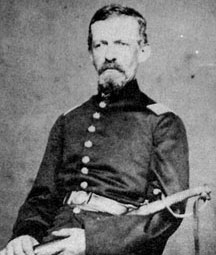

|

NAME: Isaac Dean Paull
BORN: 1834
DIED: 1864
ALLEGIANCE: Union
HIGHEST RANK: 1st Lieutenant
UNIT: 4th Massachusetts Volunteer Militia, Company G; 39th
Massachusetts Volunteer Infantry, Company F
RECORD: Enlisted as corporal in 4th Massachusetts,
April 16, 1861. Mustered out July 22, 1861. Enlisted and
commissioned 1st Lieutenant in 39th Massachusetts in August
1862. Served in the defenses of Washington until July 1863.
Transferred with his unit to the Army of the Potomac and
participated in the Mine Run Campaign in November,
Wilderness, May 5-7, 1864, and Spotsylvania Court House.
Mortally wounded at Spotsylvania, May 8, 1864.
|
|
A body. An exhumation. A mangled slug. A secretive fraternal
organization. These sound like the elements of a forensic
science/mystery/crime drama on television. While the story
is dramatic--and has, if not a happy ending, at least a
satisfying resolution--it is not the stuff of make-believe.
Isaac D. Paull of Taunton, Massachusetts, answered the
Federal government's call to arms after the firing on Fort
Sumter in April 1861. Paull enlisted in the 4th
Massachusetts Volunteer Militia, which was forming for three
months' service. The following year, he enlisted in the 39th
Massachusetts Volunteer Infantry and was commissioned a 1st
Lieutenant.
During a furlough in December 1863, Paull visited Taunton
and joined the King David Lodge Masonic Temple, an action
that would bring closure to his family in a way no one could
have foreseen. It was during this furlough that the
lieutenant sat for this portrait by local photographer H. B.
King.
Back with the 39th Massachusetts, Paull suffered a mortal
wound during the initial fighting at Spotsylvania Court
House, Virginia, on May 8, 1864, and was left on the
battlefield. After the war, Paull's family received a letter
from an Alabama surgeon and Mason who said that he had found
and buried the lieutenant's body near the battlefield, and
that Paull was later reburied nearby with three Confederate
soldiers. The surgeon had identified Paull by his Masonic
membership card.
The King David Lodge commissioned Philo T. Washburn, a
Taunton Mason and mortician, to retrieve Paull's body.
Washburn found the grave and identified Paull by his teeth
and a mark on his arm. In a climactic scene straight out of
a television show, during the examination the minie ball
that had killed Paull fell to the floor. The preserved slug,
along with Paull's portrait, tell a real-life story of
tragedy and loss.
Source: Civil War Times Illustrated
41:3 (June 2002), 80.
|